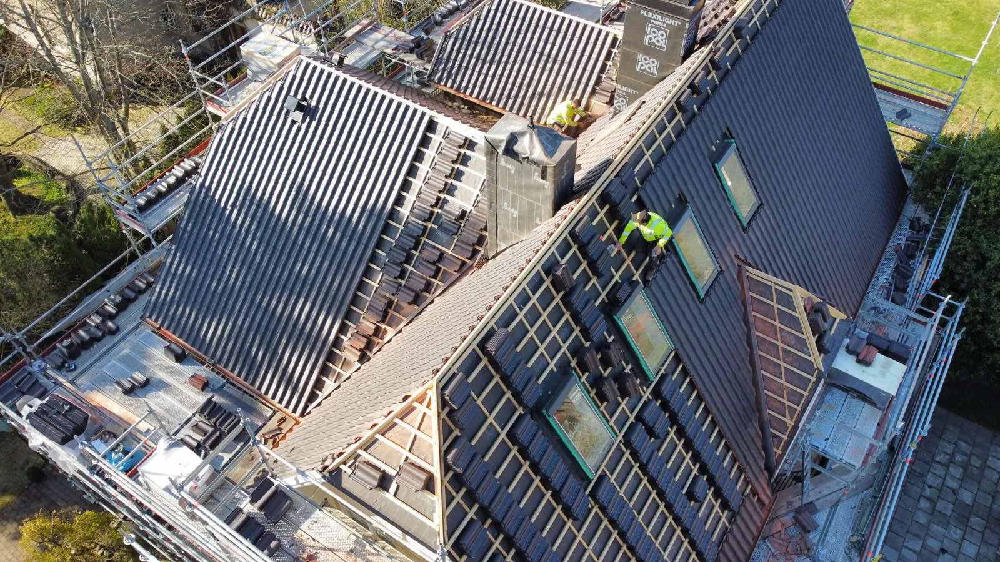
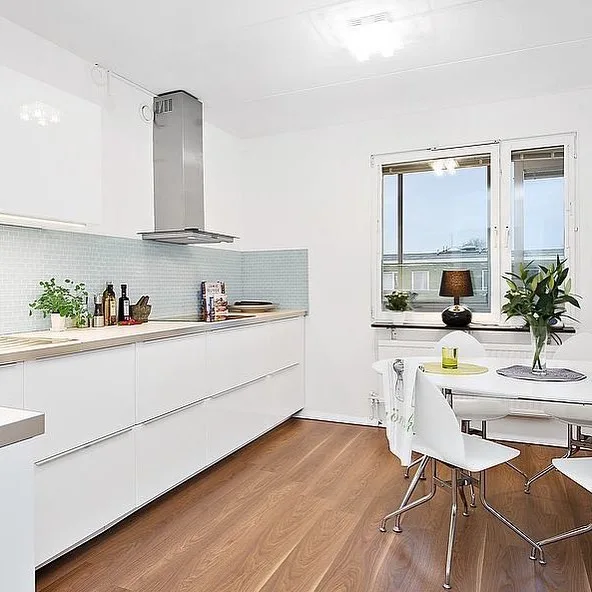
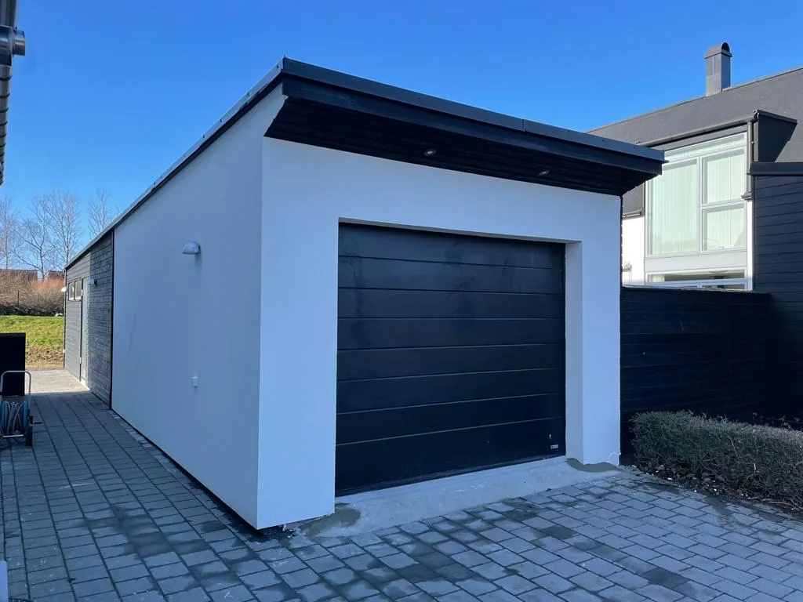
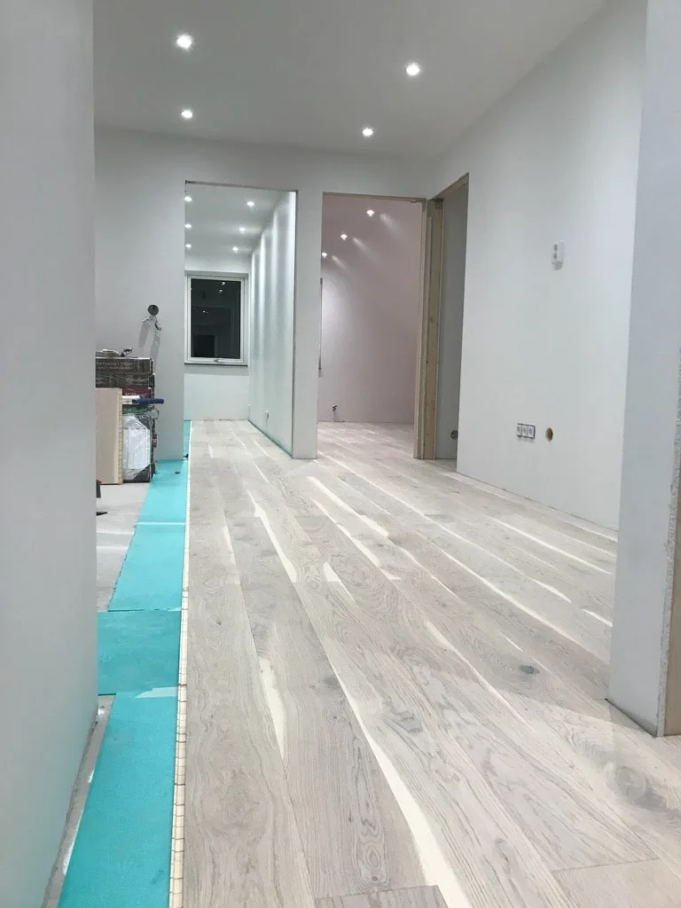
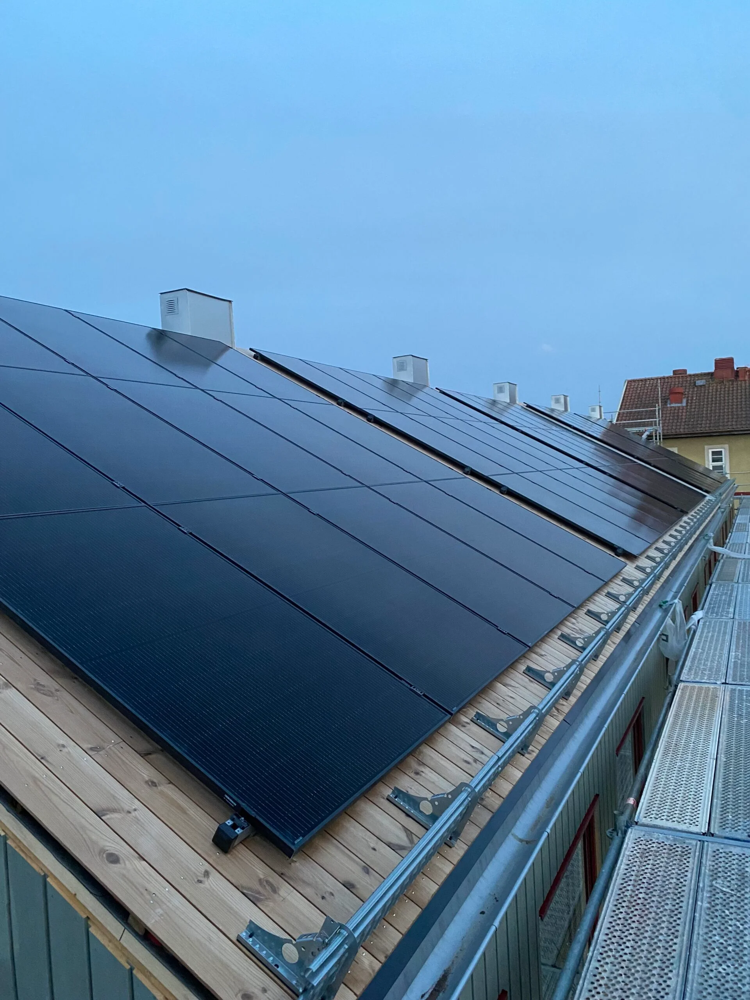

Rätt hjälp för ditt bygge.
Från ett nytt badrum till en hel entreprenad. Vi hjälper privatpersoner och företag i hela Skåne.

Takläggning
Takbyte och takrenovering med omsorg om både huset och helheten.

Badrumsrenovering
Från planering och materialval till ett färdigt badrum.

Köksrenovering
Ett funktionellt kök, planerat efter hur du vill leva.

Totalentreprenad
Hjälp från idé och projektering till genomförande.

Tillbyggnad
Ett extra rum, ett garage eller en större förändring av ditt hem.

Måleri
Måleriarbeten som förnyar och tar hand om din fastighet.

Solceller
Projektering, montage och installation i en samlad lösning.